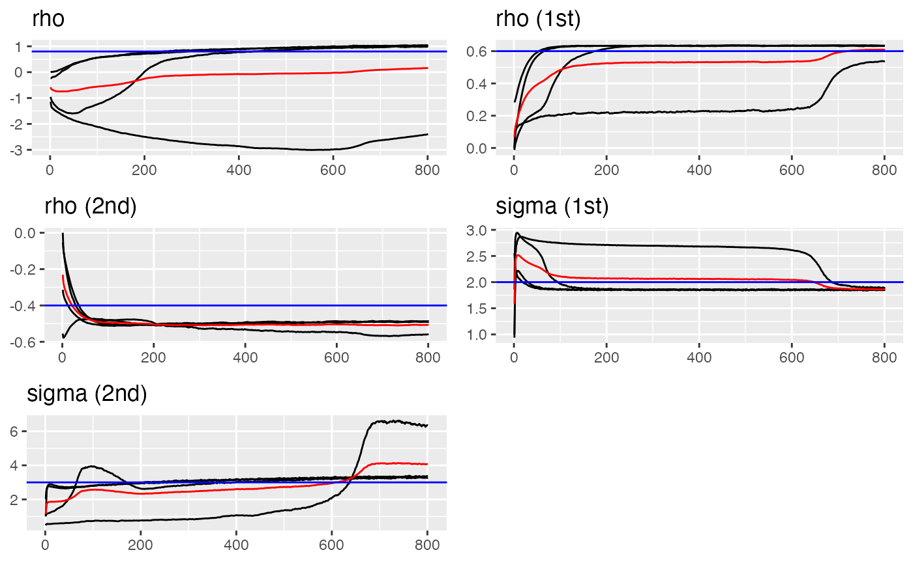
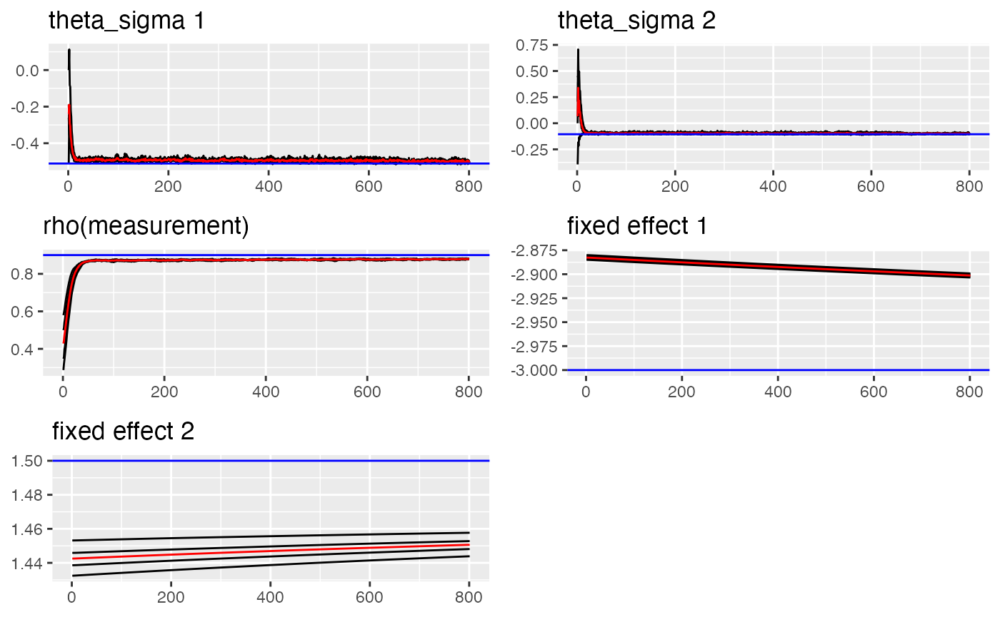
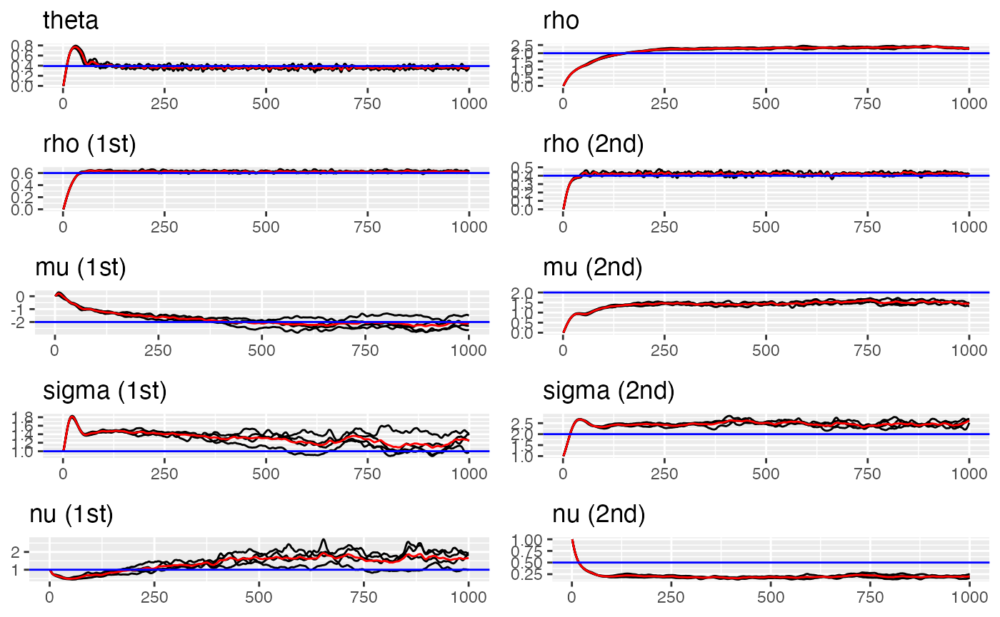

Introduction
For many applications, we need to deal with multivariate data. In this vignette, we will introduce the bivariate model which supports modeling two (non-Gaussian) fields and their correlation jointly. The main reference is Bolin and Wallin (2020) Multivariate Type G Matérn Stochastic Partial Differential Equation Random Fields.
The f function specification is similar to ordinary
model (See e.g. Ngme2 AR(1) model), but
with two more fields to help identify the variables. Extra arguments for
the f are:
group: a vector of labels to indicate the group of different observations. For example,group = c("field1", "field1", "field2", "field2", "field2). Ifgroupis provided inngme()function, no need to provide inf()function again.sub_models: characters of length 2 with names equal to one of the labels ingroup, specifying the sub-models for the two fields. e.g.sub_models=c(field1="rw1", field2="ar1").
We will see more examples in the following.
Model structure
The bivariate model can model two fields jointly. To model their correlation, we use dependence matrix to correlate them (See Bolin and Wallin, 2020, section 2.2).
Remember that, for the univariate model, it can be written as: where is some operator, represents the noise (Gaussian or non-Gaussian).
The bivariate model is similar, but with one more term to correlate the two fields: where is the dependence matrix. The noise can be classified into 4 types by their complexity, we will discuss them later.
The dependence matrix is defined as where and . The controls the angle (rotation) of the bivariate model, and represents the cross-correlation between the two fields.
One simple example
It’s eaiser to understand with one exmaple. Say we have a time series model over 5 year from 2001 to 2005, with 2 fields temperature and precipitation. You want to model the two fields jointly. The data look like the following:
library(fmesher)
library(ngme2)
temp <- c(32, 33, 35.5, 36)
year_temp <- c(2001, 2002, 2003, 2004)
precip <- c(0.1, 0.2, 0.5, 1, 0.2)
year_pre <- c(2001, 2002, 2003, 2004, 2005)
# bind 2 fields in one vector, and make labels for them
y <- c(temp, precip)
year <- c(year_temp, year_pre)
labels <- c(rep("temp", 4), rep("precip", 5)) # group is label for 2 fields
x1 <- 1:9
data <- data.frame(y, year, x1, labels)
data
#> y year x1 labels
#> 1 32.0 2001 1 temp
#> 2 33.0 2002 2 temp
#> 3 35.5 2003 3 temp
#> 4 36.0 2004 4 temp
#> 5 0.1 2001 5 precip
#> 6 0.2 2002 6 precip
#> 7 0.5 2003 7 precip
#> 8 1.0 2004 8 precip
#> 9 0.2 2005 9 precipNext we need to specify the model using f() function.
Notice the way to specify 2 sub-models, and also 2 types of noises for
each sub-model.
Notice that if we choose the Gaussian noise, we need to specify the model type as “bv2” so that the rotation is fixed to 0 (no rotation). If we choose the non-Gaussian noise, we can use “bv” model type.
# 1st way: simply put model types, using both c() and list() are ok
bv1 <- f(
year,
model = bv(
mesh = year,
theta = pi / 8,
rho = 0.5,
sub_models = list(
precip = ar1(),
temp = rw1()
)
),
group = labels,
noise = list(
precip = noise_nig(),
temp = noise_nig()
)
)
bv1
#> Model type: Bivariate model
#> theta = 0.393
#> rho = 0.5
#> precip: AR(1)
#> rho = 0
#> temp: Random walk (order 1)
#> No parameter.
#> Bivariate type-G4 noise:
#> precip: NIG
#> Noise parameters:
#> mu = 0
#> sigma = 1
#> nu = 1
#> temp: NIG
#> Noise parameters:
#> mu = 0
#> sigma = 1
#> nu = 1Four increasing construction of noise
In bivariate models, we can have more detailed control over the noise of the model. The noise can be classified into 4 category (See Bolin and Wallin, 2020, section 3.1 for details):
Type-G1: single mixing variable V, share V over 2 fileds.
Type-G2: single V, different V for each field.
Type-G3: general V, share V.
Type-G4: general V, different V.
We can specify the type of noise by the following:
t1 <- f(
year,
model = bv(
mesh = year,
sub_models = list(
precip = ar1(),
temp = rw1()
)
),
group = labels,
noise = list(
precip = noise_nig(single_V = TRUE),
temp = noise_nig(single_V = TRUE),
share_V = TRUE
)
)
t1
#> Model type: Bivariate model
#> theta = 0
#> rho = 0
#> precip: AR(1)
#> rho = 0
#> temp: Random walk (order 1)
#> No parameter.
#> Bivariate type-G1 noise (single_V && share_V):
#> precip: NIG
#> Noise parameters:
#> mu = 0
#> sigma = 1
#> nu = 1
#> temp: NIG
#> Noise parameters:
#> mu = 0
#> sigma = 1
#> nu = 1
t2 <- f(
year,
model = bv(
mesh = year,
sub_models = list(
precip = ar1(),
temp = rw1()
)
),
group = labels,
noise = list(
precip = noise_nig(single_V = TRUE),
temp = noise_nig(single_V = TRUE)
)
)
t2
#> Model type: Bivariate model
#> theta = 0
#> rho = 0
#> precip: AR(1)
#> rho = 0
#> temp: Random walk (order 1)
#> No parameter.
#> Bivariate type-G2 noise (single_V):
#> precip: NIG
#> Noise parameters:
#> mu = 0
#> sigma = 1
#> nu = 1
#> temp: NIG
#> Noise parameters:
#> mu = 0
#> sigma = 1
#> nu = 1
t3 <- f(
year,
model = bv(
mesh = year,
sub_models = list(
precip = ar1(),
temp = rw1()
)
),
group = labels,
noise = list(
precip = noise_nig(),
temp = noise_nig(),
share_V = TRUE
)
)
t3
#> Model type: Bivariate model
#> theta = 0
#> rho = 0
#> precip: AR(1)
#> rho = 0
#> temp: Random walk (order 1)
#> No parameter.
#> Bivariate type-G3 noise (share_V):
#> precip: NIG
#> Noise parameters:
#> mu = 0
#> sigma = 1
#> nu = 1
#> temp: NIG
#> Noise parameters:
#> mu = 0
#> sigma = 1
#> nu = 1
t4 <- f(
year,
model = bv(
mesh = year,
sub_models = list(
precip = ar1(),
temp = rw1()
)
),
group = labels,
noise = list(
precip = noise_nig(),
temp = noise_nig()
)
)
t4
#> Model type: Bivariate model
#> theta = 0
#> rho = 0
#> precip: AR(1)
#> rho = 0
#> temp: Random walk (order 1)
#> No parameter.
#> Bivariate type-G4 noise:
#> precip: NIG
#> Noise parameters:
#> mu = 0
#> sigma = 1
#> nu = 1
#> temp: NIG
#> Noise parameters:
#> mu = 0
#> sigma = 1
#> nu = 1Interaction with other fields (e.g. fixed effects)
When it involves more than one field, things get complicated. When we
have fixed effects but only for 1 field, we can use the special syntax
fe(<formula>, which_group=<group_name>). The
argument which_group will tell which field we have fixed
effects on. It works similar for modeling using f()
function.
Here is one example, we have different fixed effects on different fields (Intercept for both fields, and x1 for only precip field).
m1 <- ngme(
y ~ 0 + fe(~1, which_group = "temp") +
fe(~ 1 + x1, which_group = "precip") +
f(year, model = rw1(), which_group = "temp") +
f(year,
model = bv(
mesh = year,
sub_models = list(precip = ar1(), temp = rw1()),
),
noise = list(
precip = noise_nig(),
temp = noise_nig()
)
),
data = data,
group = data$labels,
control_opt = control_opt(estimation = FALSE)
)
# examine the design matrix
m1$replicates[[1]]$X
#> (Intercept)_temp (Intercept)_precip x1_precip
#> 1 1 0 0
#> 2 1 0 0
#> 3 1 0 0
#> 4 1 0 0
#> 5 0 1 5
#> 6 0 1 6
#> 7 0 1 7
#> 8 0 1 8
#> 9 0 1 9The correlated measurement noise
Now since we are taking measures of 2 different fields, there is some situation that we might want to assume the measurement of 2 fields have some correlation.
It can be written as , here is the bivariate model, and , if and are 2 different fields but measured at same location.
Now we need to modify the family argument in
ngme function, we need to set corr_measurement
and give the index_corr to indicate which observations are
correlated.
We will see how to estimate it in the next example.
Put it all together (Simulation + Estimation example)
In this example, we will first use simulate function to
simulate the hidden bivariate process. Notice that we need to provide
the labels for the 2 fields. Then we will generate the measurement noise
with some correlation. Finally, we will use the ngme
function to estimate the model.
Ex1. Fixed effects + Bivariate model (AR1, Normal) + Correlated measurement noise
n_obs <- 2000
n_each <- n_obs / 2
group <- rep(c("W1", "W2"), n_each)
reorder_loc <- sample(1:n_each)
rho <- 0.8
rho1 <- 0.6
rho2 <- -0.4
sigma1 <- 2
sigma2 <- 3
sim_fields <- simulate(
f(
c(reorder_loc, reorder_loc),
model = bv(
mesh = reorder_loc,
rho = rho,
sub_models = list(
W1 = ar1(rho = rho1),
W2 = ar1(rho = rho2)
)
),
group = group,
noise = list(
W1 = noise_normal(sigma = sigma1),
W2 = noise_normal(sigma = sigma2)
)
)
)[[1]]
# Check the correlation of the simulated fields
# acf(sim_fields[group=="W1"])
# acf(sim_fields[group=="W2"])
# Here we assume fields W1 and W2 have positive correlated measurement error
# if they are measured at same index.
# Meaning Y(i) and Y(j) have correlated measurement noise
# if they represent underlying W1(index=k) and W2(index=k)
# Generate covariance matrix for measurement noise
sd_1 <- 0.6
sd_2 <- 0.9
rho_e <- 0.9
Cov_same_idx <- matrix(c(sd_1^2, rho_e * sd_1 * sd_2, rho_e * sd_1 * sd_2, sd_2^2), nrow = 2)
print("The covariance matrix for 2 correlated fields: ")
#> [1] "The covariance matrix for 2 correlated fields: "
print(Cov_same_idx)
#> [,1] [,2]
#> [1,] 0.360 0.486
#> [2,] 0.486 0.810
tmp <- replicate(n_each, Cov_same_idx, simplify = FALSE)
Cov_measurement <- Matrix::bdiag(tmp)
# e ~ N(0, Cov_measurement)
L <- t(chol(Cov_measurement))
e <- L %*% rnorm(n_obs)
# fixed effects
x1 <- rexp(n_obs)
x2 <- rnorm(n_obs)
feff <- c(-3, 1.5)
Y <- sim_fields + x1 * feff[1] + x2 * feff[2] + as.numeric(e)
B_sigma <- matrix(0, nrow = n_obs, ncol = 2)
B_sigma[group == "W1", 1] <- 1
B_sigma[group == "W2", 2] <- 1
bvar_cor <- ngme(
Y ~ 0 + x1 + x2 +
f(
c(reorder_loc, reorder_loc),
name = "bv",
model = bv(
mesh = reorder_loc,
sub_models = list(
W1 = ar1(),
W2 = ar1()
)
),
noise = list(
W1 = noise_normal(),
W2 = noise_normal()
)
),
group = group,
family = noise_normal(
corr_measurement = TRUE,
index_corr = rep(1:n_each, each = 2),
rho = 0.5,
B_sigma = B_sigma,
theta_sigma = c(0, 0)
),
data = data.frame(Y, x1, x2),
control_opt = control_opt(
n_parallel_chain = 4,
optimizer = sgd(stepsize = 1 / n_obs),
std_lim = 1e-3,
iterations = 1000,
iters_per_check = 100,
rao_blackwellization = TRUE,
seed = 7
)
)
#> Starting estimation...
#>
#> Starting posterior sampling...
#> Posterior sampling done!
#> Average standard deviation of the posterior W: 3.106642
#> Note:
#> 1. Use ngme_post_samples(..) to access the posterior samples.
#> 2. Use ngme_result(..) to access different latent models.
bvar_cor
#> *** Ngme object ***
#>
#> Fixed effects:
#> x1 x2
#> -2.90 1.45
#>
#> Models:
#> $bv
#> Model type: Bivariate model
#> theta = 0 (fixed)
#> rho = 0.162
#> W1: AR(1)
#> rho = 0.607
#> W2: AR(1)
#> rho = -0.509
#> Bivariate type-G4 noise:
#> W1: NORMAL
#> Noise parameters:
#> sigma = 1.87
#> W2: NORMAL
#> Noise parameters:
#> sigma = 3.91
#>
#>
#> Measurement noise:
#> Noise type: NORMAL
#> Noise parameters:
#> theta_sigma = -0.498, -0.100
#> correlation(rho) = 0.878
# Compare the estimated value with the simulated value
traceplot(bvar_cor, "bv", hline = c(rho, rho1, rho2, sigma1, sigma2))
#> Last estimates:
#> $rho
#> [1] 0.1619348
#>
#> $`rho (1st)`
#> [1] 0.6092941
#>
#> $`rho (2nd)`
#> [1] -0.5063041
#>
#> $`sigma (1st)`
#> [1] 1.86024
#>
#> $`sigma (2nd)`
#> [1] 4.079236
traceplot(bvar_cor, hline = c(log(sd_1), log(sd_2), rho_e, -3, 1.5))
#> Last estimates:
#> $`theta_sigma 1`
#> [1] -0.4979397
#>
#> $`theta_sigma 2`
#> [1] -0.1003541
#>
#> $`rho(measurement)`
#> [1] 0.8794895
#>
#> $`fixed effect 1`
#> [1] -2.901319
#>
#> $`fixed effect 2`
#> [1] 1.450618Ex2. Fixed effects + Bivariate model (AR1, NIG) + Correlated measurement noise
set.seed(169)
n_obs <- 1000
n_each <- n_obs / 2
group <- c(rep("W1", n_each), rep("W2", n_each))
theta <- pi / 8
rho <- 2
rho_1 <- 0.6
rho_2 <- 0.4
mu_1 <- -2
sigma_1 <- 1
nu_1 <- 1
mu_2 <- 2
sigma_2 <- 2
nu_2 <- 0.5
reorder_loc <- sample(1:n_each)
sim_fields <- simulate(
f(c(reorder_loc, reorder_loc),
model = bv(
mesh = reorder_loc,
theta = theta,
rho = rho,
sub_models = list(
W1 = ar1(rho = rho_1),
W2 = ar1(rho = rho_2)
)
),
group = group,
noise = list(
W1 = noise_nig(mu = mu_1, sigma = sigma_1, nu = nu_1),
W2 = noise_nig(mu = mu_2, sigma = sigma_2, nu = nu_2)
)
)
)[[1]]
# Same as previous
Cov_same_idx <- matrix(c(1, 0.7, 0.7, 1), nrow = 2)
Cov_measurement <- Cov_same_idx %x% diag(n_obs / 2)
# e ~ N(0, Cov_measurement)
L <- t(chol(Cov_measurement))
e <- L %*% rnorm(n_obs)
# fixed effects
x1 <- rexp(n_obs)
x2 <- rnorm(n_obs)
feff <- c(-3, 1.5)
Y <- sim_fields + x1 * feff[1] + x2 * feff[2] + as.numeric(e)
out <- ngme(
Y ~ 0 + x1 + x2 +
f(c(reorder_loc, reorder_loc),
model = bv(
theta = theta,
rho = rho,
mesh = reorder_loc,
sub_models = list(
W1 = ar1(rho = rho_1),
W2 = ar1(rho = rho_2)
)
),
name = "bv",
noise = list(
W1 = noise_nig(),
W2 = noise_nig()
)
),
group = group,
family = noise_normal(
corr_measurement = TRUE,
index_corr = c(1:n_each, 1:n_each)
),
data = data.frame(Y, x1, x2),
control_opt = control_opt(
optimizer = adam(),
iterations = 1000,
n_parallel_chain = 4,
seed = 113
)
)
#> Starting estimation...
#>
#> Starting posterior sampling...
#> Posterior sampling done!
#> Average standard deviation of the posterior W: 2.653562
#> Note:
#> 1. Use ngme_post_samples(..) to access the posterior samples.
#> 2. Use ngme_result(..) to access different latent models.
out
#> *** Ngme object ***
#>
#> Fixed effects:
#> x1 x2
#> -3.04 1.52
#>
#> Models:
#> $bv
#> Model type: Bivariate model
#> theta = -0.722
#> rho = 2.06
#> W1: AR(1)
#> rho = -9.46e-09
#> W2: AR(1)
#> rho = -1.74e-08
#> Bivariate type-G4 noise:
#> W1: NIG
#> Noise parameters:
#> mu = 0.0291
#> sigma = 1.42
#> nu = 0.682
#> W2: NIG
#> Noise parameters:
#> mu = 2.08
#> sigma = 0.884
#> nu = 0.698
#>
#>
#> Measurement noise:
#> Noise type: NORMAL
#> Noise parameters:
#> sigma = 0.977
#> correlation(rho) = 0.669
# comparing with simulated value
traceplot(
out, "bv",
hline = c(
theta, rho, rho_1, rho_2,
mu_1, mu_2, sigma_1, sigma_2, nu_1, nu_2
)
)
#> Last estimates:
#> $theta
#> [1] -0.3516292
#>
#> $rho
#> [1] 2.062398
#>
#> $`rho (1st)`
#> [1] -1.084655e-08
#>
#> $`rho (2nd)`
#> [1] -1.861259e-08
#>
#> $`mu (1st)`
#> [1] 0.03002584
#>
#> $`mu (2nd)`
#> [1] 2.081501
#>
#> $`sigma (1st)`
#> [1] 1.451844
#>
#> $`sigma (2nd)`
#> [1] 1.18415
#>
#> $`nu (1st)`
#> [1] 0.8091013
#>
#> $`nu (2nd)`
#> [1] 0.7799638Helper tool to build correlation index between two fields
Sometimes it’s tedious to provide to index_corr argument
to indicate which observations are correlated, we can use the helper
function compute_index_corr_from_map to reduce the
work.
It can helps to compute the distance (both 1d or 2d distance) given the location we want to use. If some of them are close enough, then we will correlate them.
# provide the x,y coordinate (2d locations)
x_coord <- c(1.11, 2.5, 1.12, 2, 1.3, 1.31)
y_coord <- c(1.11, 3.3, 1.11, 2, 1.3, 1.3)
coords <- data.frame(x_coord, y_coord)
# here we can see 2 pairs (1 and 3, 5 and 6) of observations are close enough
compute_index_corr_from_map(coords, eps = 0.1)
#> [1] 2 1 2 3 4 4